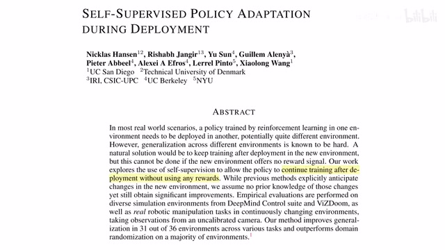
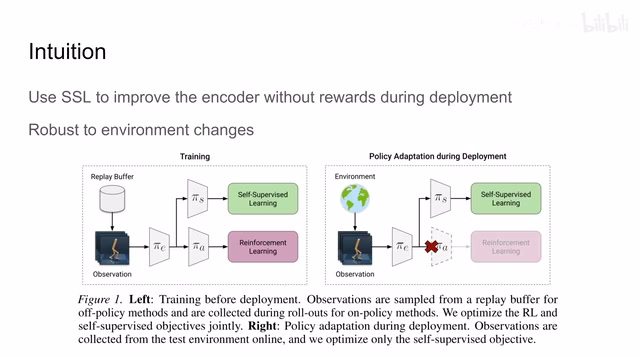
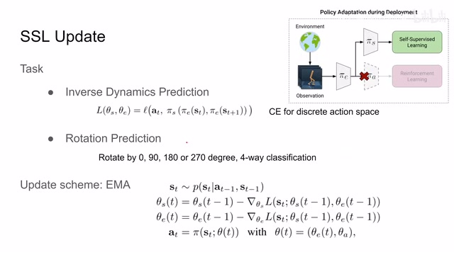
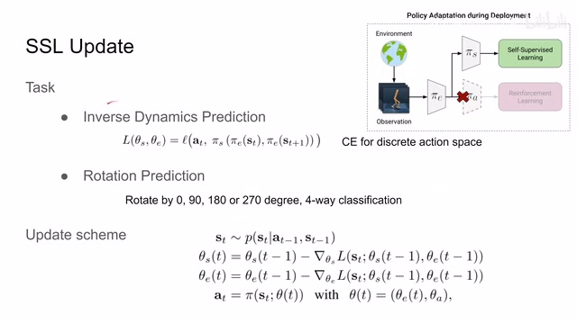
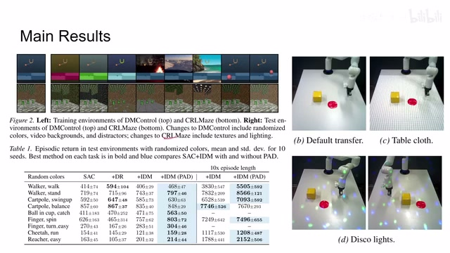
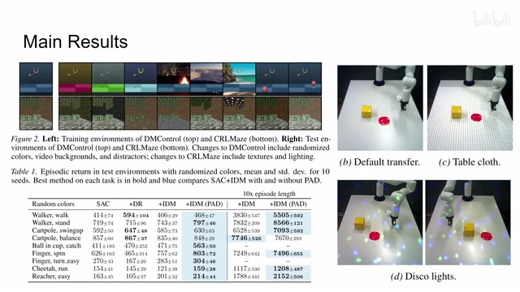

← 返回阅读库 · 原论文目录
论文讲解阅读文档 · 机器人学 · v138
Self-Supervised Policy Adaptation during Deployment[2007.04309]
视频时长 00:03:42；讲解文字 1,826 字符；提取讲解画面 6 张。按视频原顺序阅读，每段文字保留时间戳。
文字来自整段视频的自动语音转写，按自然停顿分段，并与 PPT / 论文页面 / 演示画面对齐。未将讲解压缩为摘要；术语、数字和口述公式请结合画面及原论文核对。 阅读稿已校正规范部分明确术语误识别；原始逐字稿和每处修改记录另行保留。
讲解画面为源视频截图（640×360），不是可编辑 PPT 文件。全片按每秒 2 帧扫描内容变化，逐步展开页保留；连续动画保留代表画面。清晰度受源视频限制。
下载完整资料包 · 含离线 HTML、PDF、Word、全部 PPT 画面和字幕。
原论文与材料
Self-Supervised Policy Adaptation during Deployment · 下载完整 PDF（18 页）
按时间阅读
00:00:00–00:00:44 · 画面 001

00:00:00–00:00:44 · 画面 001大家好,今天我们来迅速介绍一篇工作 Self-supervised policy adaptation during deployment。那么这篇论文主要讨论的就是在我们的 reinforcement learning 的方法训练好了之后，在实际的部署过程中，我们的环境可能发生改变。那么为了应对这些环境的改变，让我们的算法更有鲁棒性，作者提出了说我要在部署的过程中继续对我们的 agent 进行训练。
而这个训练过程中呢，因为我们可能不那么方便的获得我们的 reward 的信息，在这里呢，作者就引入了这个 self-supervised 这样的任务，帮助我们持续的改善这个 rl 里面的 encoder，达到对环境的改变呢有一定鲁棒性这样一个目的。那么具体来看作者的实现，那首先呢看到他的这个网络呢是一个 encoder 加上两个不同的 head 这样一个结构。那么一个 head 呢是做这个 self-supervised learning 的，另一个 head 呢是做 reinforcement learning 的。
00:00:44–00:01:25 · 画面 002

00:00:44–00:01:25 · 画面 002那么在一开始做这个 reinforcement learning 的训练的时候呢，当然两个 head 都可以提供 loss 就可以正常的训练。在我们做这个但是在部署的阶段呢，我们呢因为不那么方便取得这个 reinforcement learning 的 reward，那么我们就只剩下这个 self-supervised learning。但是即便如此呢，它依然能够改善这个 encoder 的性能，借此呢提升我们 reinforcement learning 的性能。那么下面呢我们就要看这个作者的这个 self-supervised learning 它到底是个什么东西呢。
00:01:25–00:01:26 · 画面 003

00:01:25–00:01:26 · 画面 003这里呢我们看到作者其实研究了两种任务，一种呢叫做 inverse dynamics prediction，那种呢叫 rotation prediction。那么这个你看他名字可能很火啊，其实他就是我们在有了一个 transition 之后，他是一个 state action 还有 next state 这样一个 pair 嘛。那么我把我的这个 state 和 next state 入到我们的 encoder 里面，然后呢过我们的这个 self-supervised 这个 head。
00:01:26–00:03:03 · 画面 004

00:01:26–00:03:03 · 画面 004它的目的是预测一下 State Transition 过程中我们执行了什么样的动作，也就是和我们 Action 的 Ground Truth 来进行对比。如果是连续的动作空间，我们用 L2 Distance MSE 就可以了，对于离散动作空间就用 Cross Entropy 也是极好的。那么这种设计呢就巧妙的规避了像我们传统的这个 dynamics prediction 它需要对未来进行预测这样一个相对困难的任务，而是尽可能多的把我们的信息呢提供给网络，让网络预测一个相对简单的这个 action。那么即便如此呢，依然能够取得不错的性能。那么另一个任务呢就更简单叫做 rotation prediction，它就是我把这个。
图像随机旋转 090 或 180 度或者 270 度，然后呢我用一个四分类的 classifier 来预测一下我这个图像到底旋转多少度。那也是一个非常经典的 self-supervised learning 的这样一个任务。那么当然实验下来呢发现这个 inverse dynamics 它的这个性能呢是最好的。那么在我们得到这些任务的 loss 之后该如何对网络进行更新呢？其实非常简单，你可以看到呢这里有直接的这个上一个时刻的减去这个 gradient。
非常直接的一个更新方式啊，而且不影响我们的网络这个在线的运行。那么在实验部分呢，作者测试了像这个 DM Control 啊，对吧，CRLMaze 啊，还有这个 Push 就是推一个物体到这个目标。你可以看到呢这里它对环境施加了不同的扰动。可以看到本文的方法呢在长时间的运行过程中呢起了非常不错的效果。那可以说这是意料之中的事情。那么此外呢，作者还汇报了丰富的 ablation。
00:03:03–00:03:41 · 画面 005

00:03:03–00:03:41 · 画面 005还有对象这个 CRLMaze 啊，还有这个 push 这个任务的详细的这些数据，包括作者的一些实验的设计，非常推荐的你到原文查看。好的，以上就是我对这个论文的一个快速的介绍。那么感谢您的收看，再见。
00:03:41–00:03:42 · 画面 006

00:03:41–00:03:42 · 画面 006转写与来源说明 · 0 个自动复核提示
保留 9 个原始语音片段，0 个片段触发自动复核提示。提示仅用于定位可能的术语、重复或识别问题，不等于已确认错误。
讲解画面为源视频截图（640×360），不是可编辑 PPT 文件。全片按每秒 2 帧扫描内容变化，逐步展开页保留；连续动画保留代表画面。清晰度受源视频限制。
原视频：paper/合集_2026-10-16_机器人学/[论文速览]Self-Supervised Policy Adaptation during Deployment[2007.04309].mp4
SHA-256：7671373667bee77de8b953bfe5e835b6a7b1dde1d405bb345cd854720f37f40f
全文按视频语音与画面制作。原论文可从上方链接下载；完整资料包保留全文、原始逐字稿、字幕和校对记录。